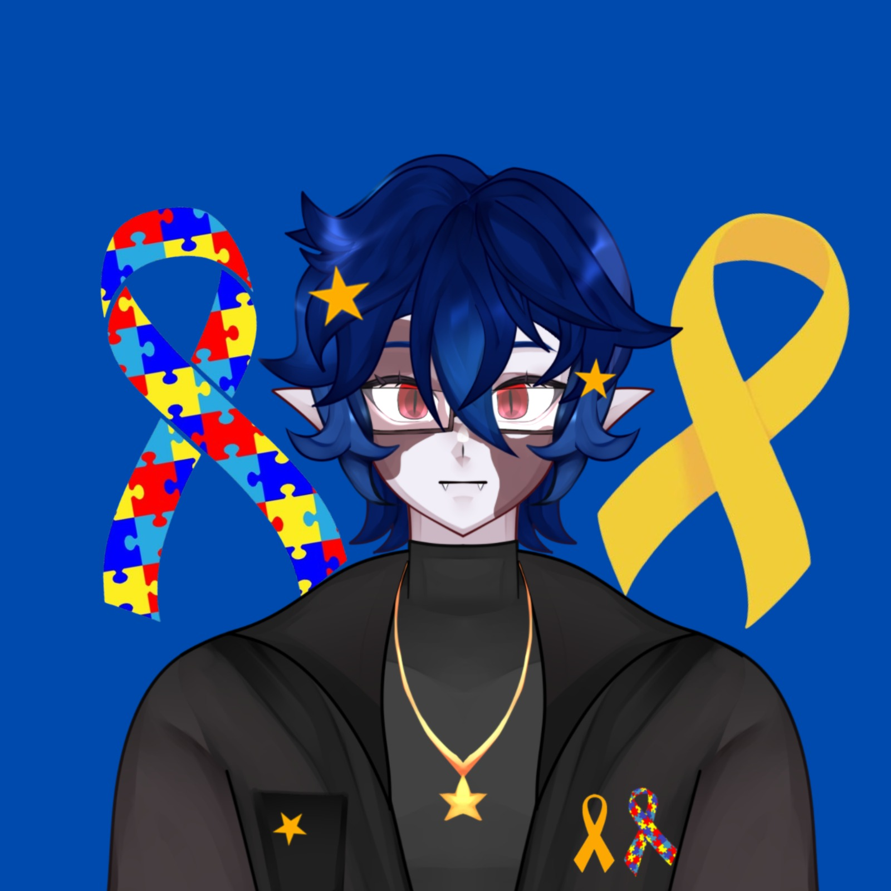
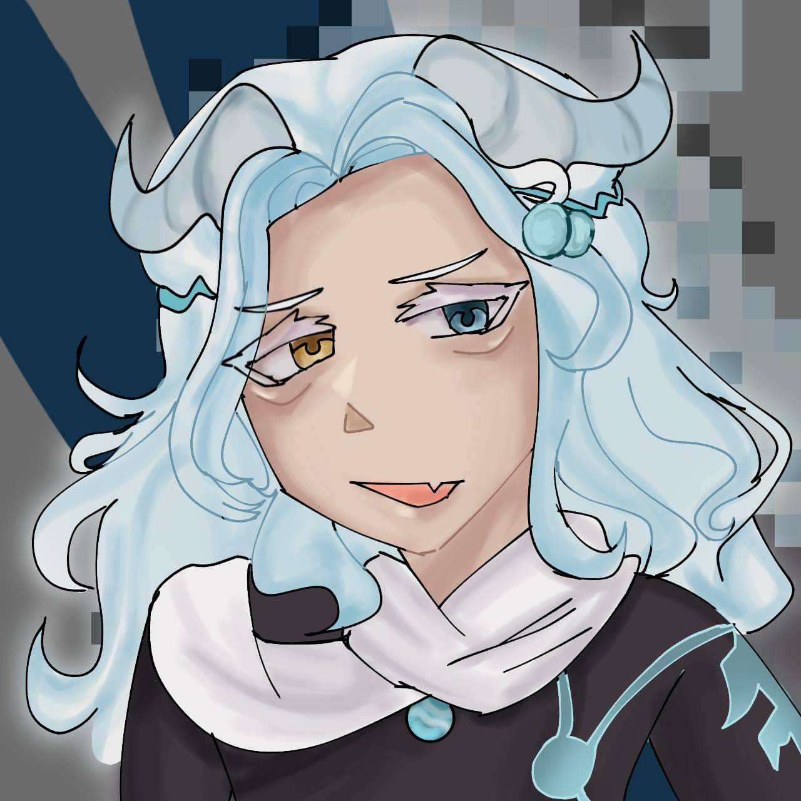
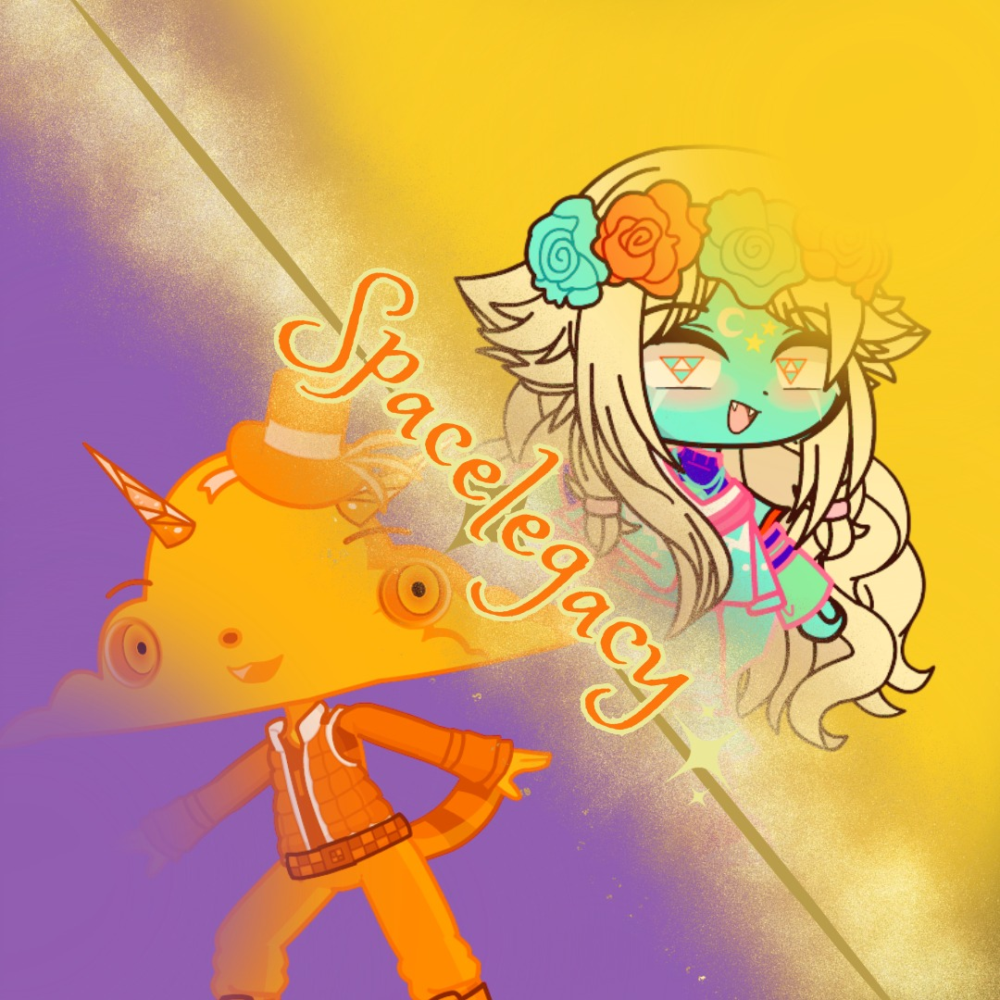
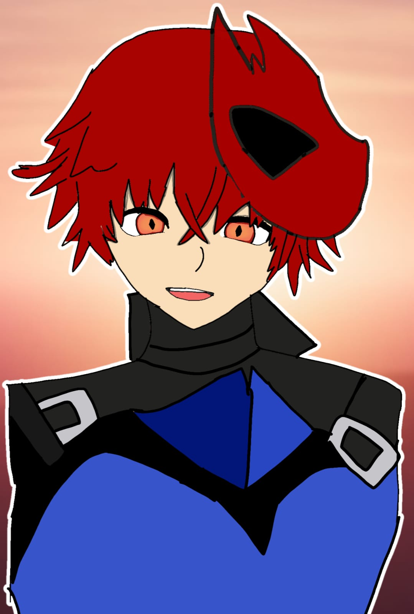
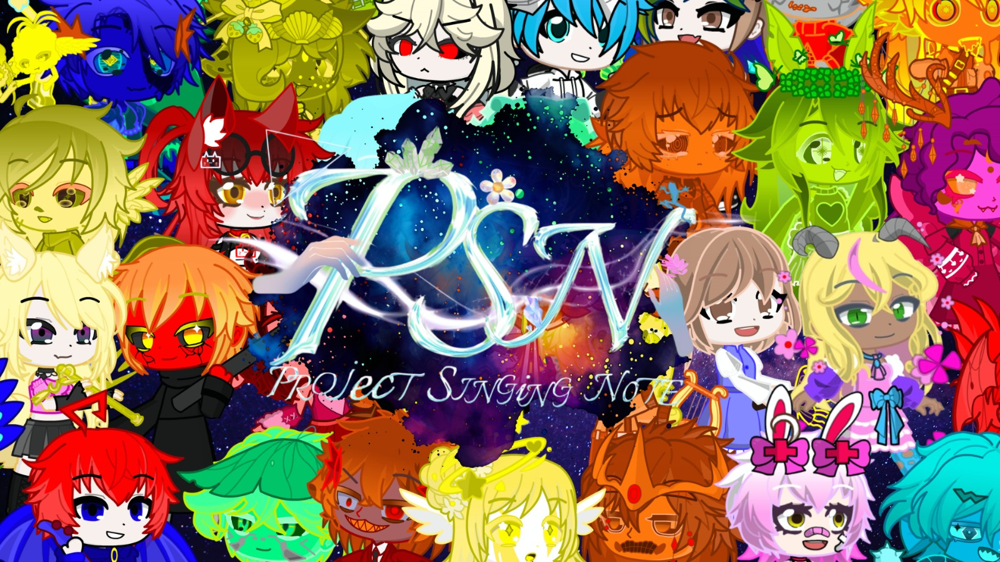

♡ Nosso time
Membros da Néoro
Conheça os criadores que fazem parte da nossa história e acompanhe seus espaços.





Um grupinho cheio de criatividade, amizade e ideias. Aqui, cada projeto e cada história fazem parte da nossa jornada.
A Néoro começou pequena, mas cresceu com a união, o respeito e a criatividade de muitas pessoas.
Nossa história começou em 2025, quando Michelle e seu amigo do Discord, Sparkle_atv, se conheceram por meio de um projeto de VTubers chamado Veestars.
Na época, Michelle não foi aceita na agência, enquanto Sparkle_atv conseguiu uma vaga. Mesmo assim, os caminhos dos dois acabaram se cruzando e dando início a algo muito maior.
Eles trocaram suas primeiras mensagens no dia 12/06/2025, às 06:35. Pouco tempo depois, a agência da qual Sparkle_atv fazia parte foi hackeada, o que acabou abrindo espaço para novas ideias e possibilidades.
Em 14/06/2025, uma conversa entre os dois demonstrava o desejo de começar algo novo:
Foi assim que surgiu a ideia da Néoro: um pequeno projeto que começou com uma conversa entre dois amigos e o desejo de criar oportunidades para VTubers iniciantes.
Com aquela conversa, nasceu a Néoro – Agência de VTubers Iniciantes.
Inicialmente, o grupo começou com quatro membros. Apesar da empolgação e das expectativas, o projeto também enfrentou dificuldades, e acabamos perdendo um dos integrantes.
Com o passar do tempo, Sparkle_atv começou a se afastar e chegou a cogitar desistir de ser VTuber.
Mesmo diante dessas dificuldades, Michelle decidiu não abandonar o projeto.
No dia 19/09/2025, ela fez uma postagem simples anunciando um recomeço. No dia seguinte, publicou um vídeo apresentando oficialmente a agência.
A partir daquele momento, a Néoro começou uma nova etapa, agora com Michelle assumindo a responsabilidade de continuar o projeto.
Com dedicação, paciência e muitas ideias, a agência começou a crescer.
Novos VTubers chegaram, algumas pessoas conhecidas se juntaram ao projeto e outras apareceram trazendo novas experiências, talentos e amizades.
Ao longo dessa caminhada, tivemos pessoas que ajudaram bastante, participaram das atividades e contribuíram para que a Néoro se tornasse algo maior do que sua ideia inicial.
Também houve mudanças na equipe, pessoas que seguiram outros caminhos e integrantes que permaneceram ao nosso lado.
Para dar mais visibilidade ao projeto, Michelle criou um site simples, desenvolvido com muito carinho e dedicação, para apresentar a agência, seus integrantes e suas atividades.
Mesmo sendo um projeto pequeno, cada atualização, publicação e conquista representava mais um passo para construir aquilo que imaginávamos desde o início.
Em 2026, a Néoro voltou com novidades!
Novos membros chegaram, antigos integrantes retornaram e algumas pessoas que já faziam parte da nossa história continuaram contribuindo para o projeto.
Entre aqueles que permanecem, temos Puki, que continua conosco até hoje, além de Michelle, que segue como criadora e responsável pelo projeto.
Com o passar do tempo, percebemos que a Néoro já não precisava ser apenas uma agência.
Nossa proposta mudou, assim como nossa forma de enxergar o grupo.
Por isso, deixamos para trás o nome Néoro Agência e passamos a utilizar Néoro Creative.
Hoje, não somos apenas uma agência que reúne VTubers. Somos um grupo unido, formado por pessoas com diferentes experiências, ideias e projetos.
Temos VTubers, criadores de PNGs e até pessoas que fazem parte de outras comunidades. Não precisamos que todos tenham exatamente o mesmo tipo de conteúdo ou sigam o mesmo caminho para fazer parte desse espaço.
O mais importante é a união, o respeito e a vontade de compartilhar aquilo que fazemos.
Quando olho para trás, vejo o quanto tudo mudou.
A Néoro começou com uma conversa entre duas pessoas que tinham vontade de criar alguma coisa juntas. Naquela época, eu não imaginava quantas pessoas conheceria, quantas amizades faria ou quantas experiências viveria por causa desse projeto.
Hoje, já estou com 19 anos e continuo aqui, acompanhando essa história que começou em 2025.
Foi muito bom conhecer tantas pessoas durante essa caminhada. Algumas participaram por pouco tempo, outras ficaram por mais tempo, algumas seguiram seus próprios caminhos e outras chegaram recentemente.
Independentemente de quanto tempo cada pessoa permaneceu, todas fizeram parte de algum capítulo dessa história.
Quero agradecer a todos que já participaram da Néoro, aos que ajudaram a construir o projeto, aos que permaneceram e aos que estão chegando agora.
Cada pessoa deixou alguma contribuição, seja uma ideia, uma ajuda, uma amizade ou simplesmente um momento que ficará guardado.
Não sabemos exatamente o que o futuro reserva para a Néoro Creative, mas sabemos que ela continuará sendo um espaço para compartilhar ideias, projetos e experiências.
De uma pequena ideia entre dois amigos, nasceu um projeto que conheceu muitas pessoas e passou por várias transformações.
E essa história ainda não acabou.
— Michelle, criadora da Néoro Creative. 💜✨
Conheça os criadores que fazem parte da nossa história e acompanhe seus espaços.




Conheça os projetos, páginas e universos criados pelos membros do grupo.
 Projeto de Oriel
Projeto de Oriel
Um espaço criado por Oriel para reunir conteúdos, recursos e informações relacionados a VTubers.
Acessar projeto Projeto de Oriel
Projeto de Oriel
Página de comissões de Oriel, com informações sobre serviços e trabalhos personalizados.
Acessar projeto
Projeto de SpaceWiki do projeto SpaceLegacy Studio, criada para reunir informações e conteúdos do universo do Space.
Acessar projetoAs últimas atualizações, conquistas e acontecimentos dos membros da Néoro Creative.
Escreva aqui o texto da notícia: o que aconteceu, quem participou e por que é importante para a Néoro Creative.
Ler maisUse este card para anunciar estreias, novos vídeos, eventos, colaborações ou a chegada de novos integrantes.
Ler mais